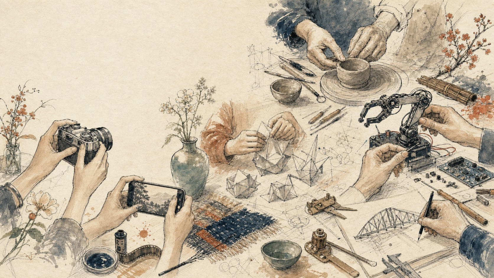
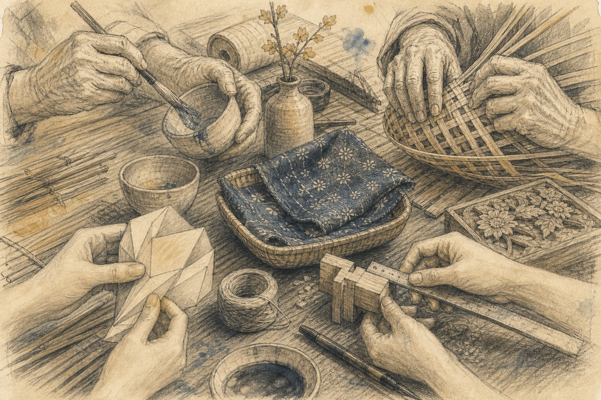
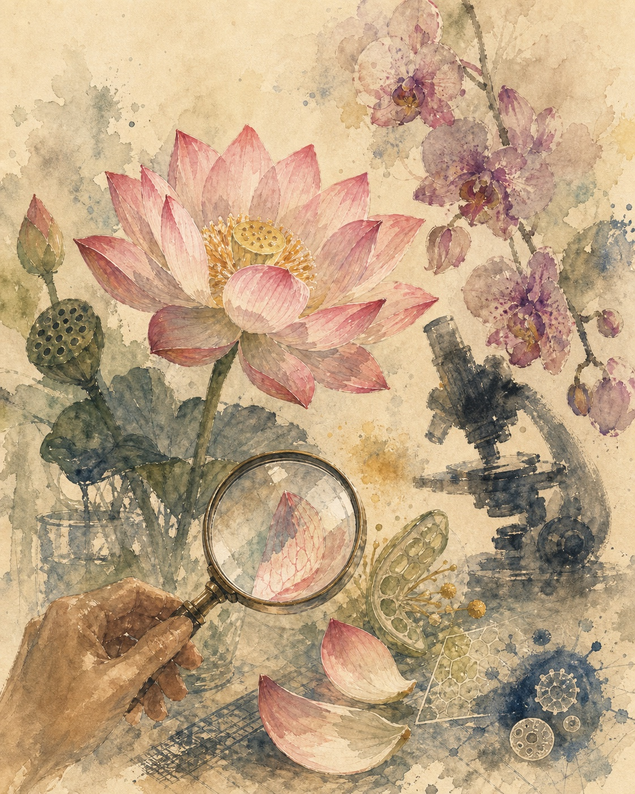
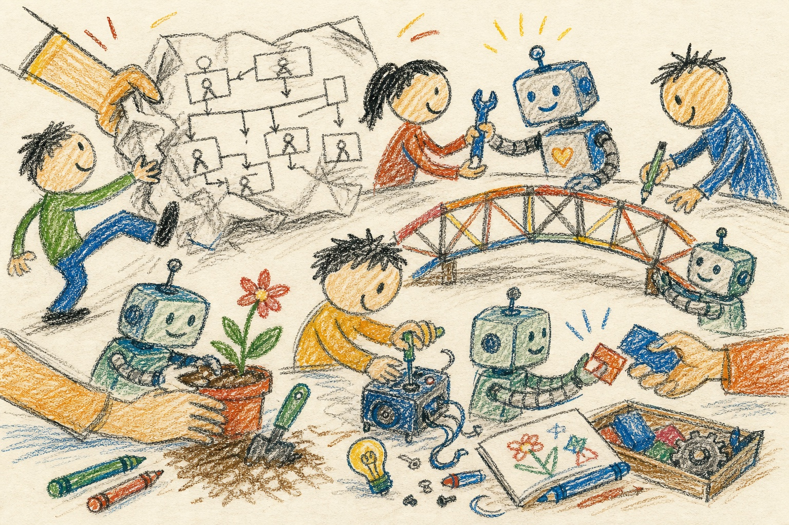

Notice
Begin with beauty before explaining it.

From wonder to working lessons
This portal began with the beauty of photographs in an exhibition. The more I wondered how to appreciate that beauty, the more two paths opened: the craftsmanship of human making, and the deeper beauty revealed by science and math.
Hands and minds
“The hand is the cutting edge of the mind.”
Jacob Bronowski
Bronowski’s line felt like the hinge of the project. Hands hold the camera, fold the paper, shape the clay, solder the circuit, and adjust the machine. The mind keeps moving with them.


Beauty with more layers
Feynman was answering a familiar worry: that analysis might make a flower feel smaller. He begins with ordinary beauty, then moves inward, toward cells, colors, evolution, attraction, and the questions that become visible once we know more.
“I can appreciate the beauty of a flower… I see much more about the flower… It only adds.”
Richard Feynman, from the embedded clip
That was the spirit of the learning sites: keep the first beauty intact, then let science and mathematics open more doors inside it.
The missing feedback link
“The craftsman’s mind is going constantly, in tandem with her hands. Yet large organizations try to separate the work of minds and hands. In so doing, they often sever the vital feedback link between the two.”
Henry Mintzberg
That feedback link is also why iteration matters here. A project becomes clearer when hands, eyes, tools, students, teachers, images, code, and critique stay close enough to answer one another.

From journey to reality
Begin with beauty before explaining it.
Turn an intuition into a visible structure.
Let real users, images, and questions push back.
Refine the relationship between attention and understanding.
Enter the two experiments
Visit the first working version, then the expanded version that grew from the willingness to keep looking, testing, and remaking.